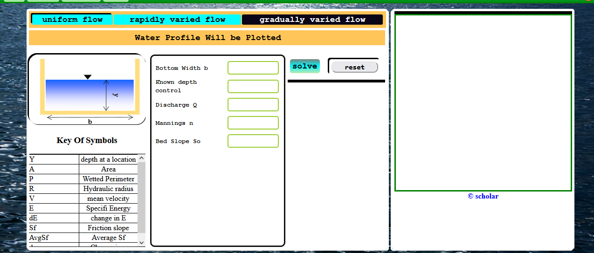
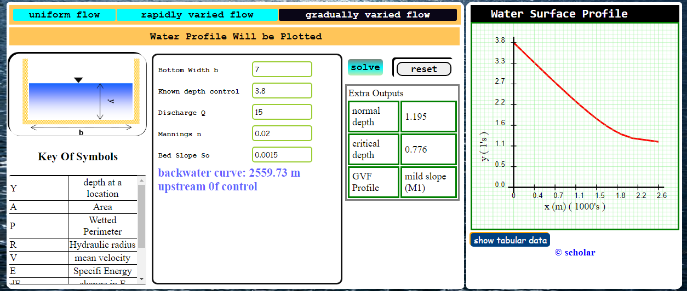
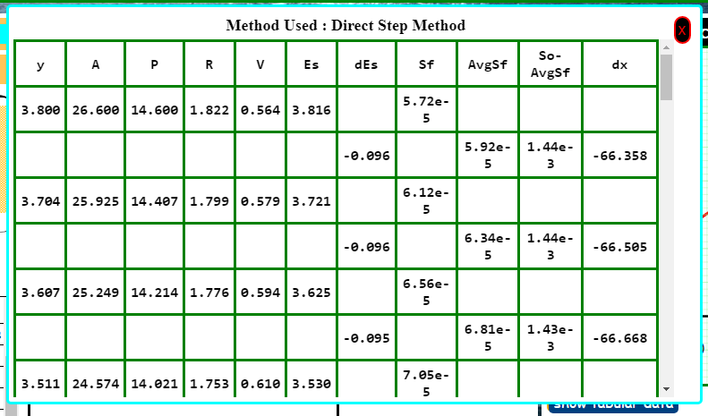

Gradually Varied Flow Analysis
Here emphasis is put on drawing the water surface profile. The program generates the profile, and calculates water curve length;
- Click the gradually varied flow button. An interface as below will show up

-
Enter in the requested parameters: e.g discharge Q = 15 , Known control depth = 3.8; bottom width = 7, manning n = 0.020, So = 0.0015
NB: The known control depth is the depth at the control point, i.e point at which the flow properties are known
-
Then click the solve button; The out put will appear as below.

- To view results in tabulated form; Click on the button labeled show tabular data. This button appears below the water surface profile
A table as below will pop up.

Look at the Key Table(Appears below the section shape image) to know the meaning of symbols that are used in the table